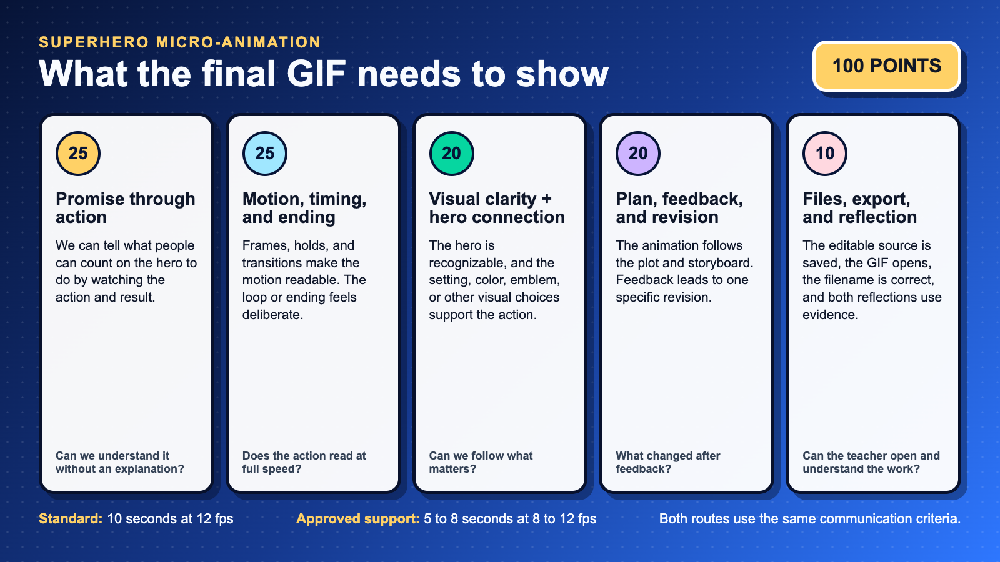

Week at a Glance
Day 1
Define: Reopen the comic promise, choose one visible action, and finish the Plot Diagram.
Objective Keep the same hero and problem. Make no more than one clarity change.
Objective Keep the same hero and problem. Make no more than one clarity change.
Day 2
Plan + Practice: Finish 6 storyboard panels, or an approved 4-panel route, watch the tutorial, and post the practice loop.
Objective Plan key poses and learn the controls before building the final scene.
Objective Plan key poses and learn the controls before building the final scene.
Day 3
Prototype: Build the first complete pass across the whole scene and save the editable source.
Objective Use key poses, duplicated frames, layers, onion skin, and holds to make the action readable.
Objective Use key poses, duplicated frames, layers, onion skin, and holds to make the action readable.
Day 4
Test: Finish a WIP, get feedback, make one specific revision, and save again.
Objective Use feedback to improve timing or clarity.
Objective Use feedback to improve timing or clarity.
Day 5
Share: Test the final animation, export the GIF, submit it, and complete both reflections.
Objective Deliver a working animation and explain one revision.
Objective Deliver a working animation and explain one revision.
Progress Tracker
✅ Comic promise reopened 📝 Plot diagram submitted 🎞️ Storyboard submitted 🎓 Tutorial watched + tools tried 🔁 50% WIP checked 🏁 Final GIF submitted

Define • Comic Promise + Plot Diagram
Bring your comic forward. Reopen the promise you already made. Keep the same hero and the same problem. You may make one clarity change. Then name the action the audience will actually see.
Sentence stem: People can count on my hero to _____ when _____.
Sentence stem: People can count on my hero to _____ when _____.
BAM!
- Plot Diagram: Exposition, Rising Action, Climax, Falling Action, Resolution for one tight moment.
- Constraints: 10 seconds • 12 fps • about 120 displayed frames • one shot or two simple cuts. Duplicate poses and hold frames; do not draw 120 different pictures.
- Deliverables: Reopen your comic promise, name one visible action, and upload your Plot Diagram.
Ideate • Plot → Storyboard
Step 1: Finalize Plot Diagram
- Pick a before → choice → after moment that proves your promise.
- Note timing beats where the loop returns to frame 1.
WHOOSH!
Step 2: Storyboard (6 panels or an approved 4-panel route)
- Include motion arrows, timing notes, layer plan, and a loop idea.
- Keep drawings simple. Notes matter more than perfect art.
Learn Piskel
- Default: Watch the embedded YouTube tutorial, pause it, and try each tool in Piskel.
- Teacher option: Your teacher may connect the Edpuzzle version for embedded questions or Live Mode.
- Practice: Draw 3 to 5 unique poses. Duplicate or hold them to reach 12 to 24 displayed frames, post the 1 to 2 second loop, and leave two specific peer replies.
💡 Power-Up Tips: Hotkeys & Loop Tricks
- Hotkeys: Ctrl/⌘+Z undo • Ctrl/⌘+D duplicate • hold Shift to select.
- Onion skin: keep on while roughing; toggle off to check stutter.
- Loop hack: animate to the apex, then duplicate frames in reverse.
- Specs: 128×128 or 192×192 • 12 fps • Name: Lastname-Firstname-HeroName-Piskel.
Prototype • Animate your scene
Support
- 5 to 8 seconds at 8 to 12 fps
- One clear action with a visible result
- The same feedback, file, and reflection expectations
Standard
- 10 seconds at 12 fps
- A recognizable connection to the same hero
- One clear action, visible result, and intentional timing
Extension
- Keep the duration target your teacher approved
- Add one advanced technique only after the action reads clearly
- Polish timing, effects, or the loop instead of adding more story
Example 
Checklist
- Separate layers for bg / character
- Onion skin on for smooth motion
- Loop tested at 12 fps
- The action shows what people can count on the hero to do
Milestones
- Rough pass complete
- In-betweens added
- Loop closes cleanly
Troubleshoot
- Stutter? Duplicate frames evenly
- Smear frames for fast moves
- Reduce colors for clarity
Tip: If a video won’t load in Canvas, open on YouTube.
Test & Share • Gallery Walk
- Open the final GIF and let it loop. Keep device sound off unless your teacher says the animation uses audio.
- Visit two classmates. Leave one specific reply for each:
- I like… something specific that works
- I wonder… a curious question or suggestion
- Revise timing or frames, then export your final GIF.
Reminder: Kind • Specific • Helpful.
Resources & Help
- Save the editable source: Piskel does not autosave to the cloud. Download the
.piskelfile before closing the tab or changing devices, then move it to the storage location your teacher gives you. - Keyboard tips: Ctrl/⌘+Z undo • Ctrl/⌘+D duplicate • Onion skin for in-betweens.
- Export: File → Export → GIF • 12 fps • check repeat.
- Hero Promise Idea Bank: Protect • Include • Repair • Encourage • Inform • Clean • Empower.
Specs: 128×128 or 192×192 • 12 fps • Name files Lastname-Firstname-HeroName-Piskel
Tip: If a link doesn’t open inside Canvas, right-click → Open in new tab.